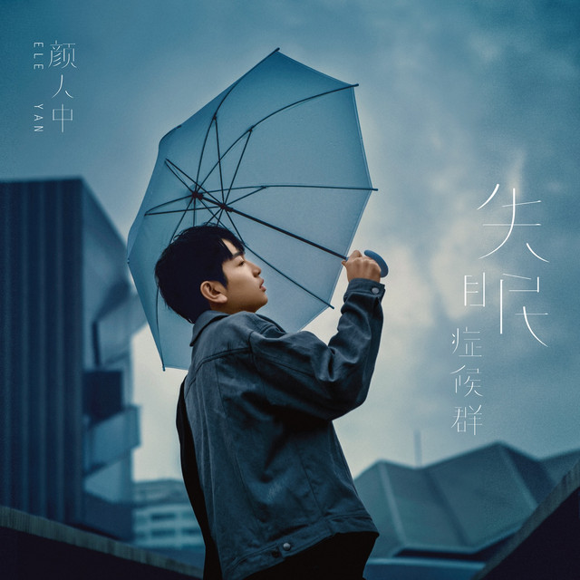
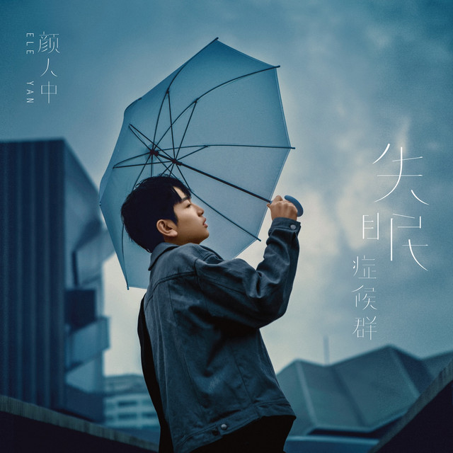
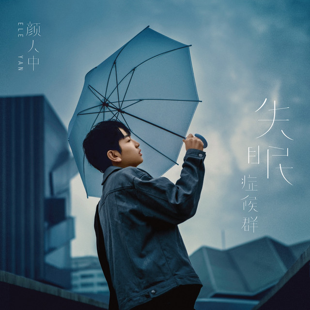
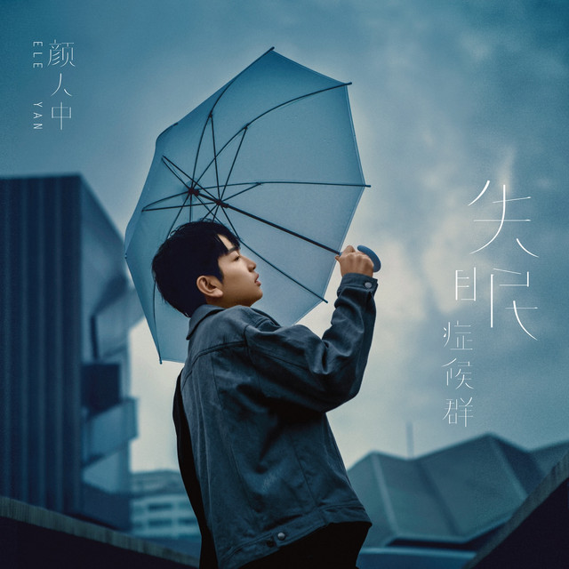

 

Ele Yan (颜人中) is a Mandarin pop singer and songwriter known for his gentle voice and emotionally sincere music. Since his debut, he has gained popularity among young listeners for his warm tone and heartfelt lyrics. His songs often revolve around themes of loneliness, healing, and nostalgia, bringing a deep sense of story and emotion to every track. Some of his most loved works, such as “Good Night” and “Insomnia Syndrome”, have become comforting late-night companions for many fans. Beyond writing and performing, Ele Yan also explores diverse collaborations and performances, continuing to expand his artistic expression. With his authenticity and emotional depth, he has established a unique presence in the Mandarin pop scene.